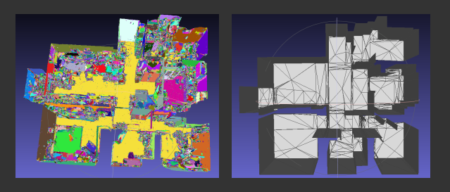
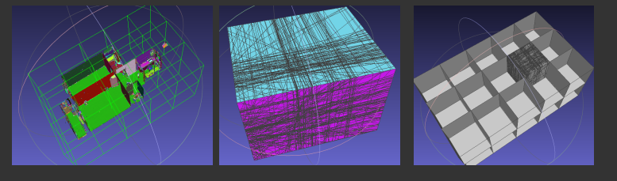

室内结构化重建

左图为分割结果，右图位结构重建结果
针对室内模型的平面特点， 对室内模型进行优化， 提取结构化平面形成结构化模型。 针对非结构室内物品进行单独处理。
对场景进行平面分割
使用分层构建策略，实现 3D-Arrangement 算法，对场景进行平面剖分。
结合几何和房间Grammar解析语义信息，结构识别。
结合语义信息，选择重建结构平面
使用 Visibility 信息来构建能量函数。 使用GraphCut 求解能量函数。得多边形网格。
对多边形三角剖分，得到三角形网格。
 分层3D-Arrangement